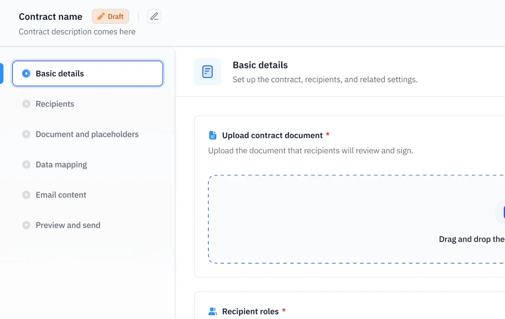
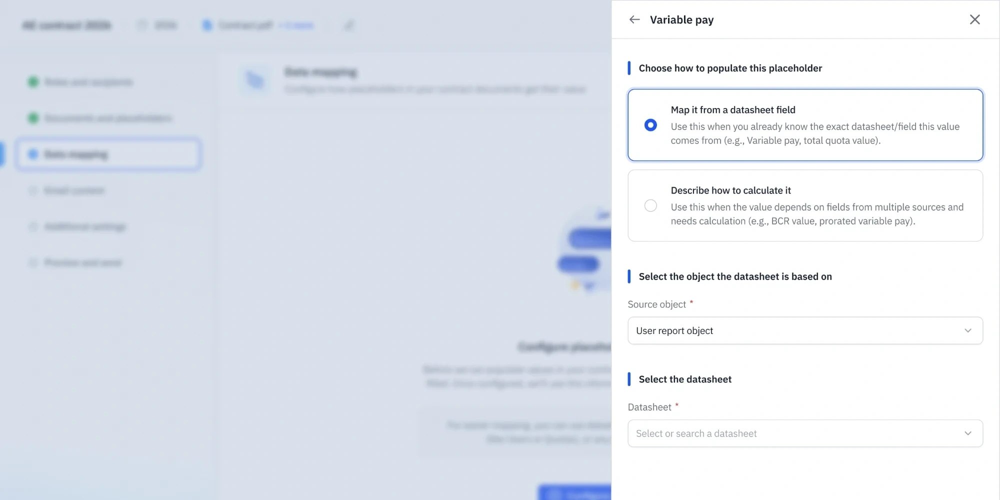
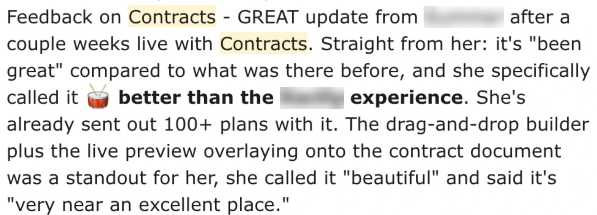

Simplifying contract management with AI
- My role
- Product Design · UX/UI
- Collaborators
- Akkshaya Varkhedi (PM) · Engineers
Contracts lets companies create, send, and manage personalized sales compensation agreements for their salespeople.
What started as an effort to simplify the existing DocuSign-based workflow eventually became a native contract management experience, with Eva, our AI assistant, helping reduce the manual work involved in preparing contracts.
Understanding the problem
I started by going through the existing Contracts flow, reviewing customer feedback, and understanding how customers created and sent contracts.
Previously, Contracts used DocuSign, which was embedded within Everstage. Admins could upload a document and add fields that needed to be filled with each salesperson's information.
But creating the template was only half the work.
To send contracts, admins still had to:
- Set up the contract in DocuSign. Upload the document and add fields for each salesperson's information.
- Download the fields as a spreadsheet. Get a CSV containing all the fields that need to be filled.
- Manually prepare everyone's data. Collect each salesperson's information from different sources and fill in the spreadsheet, along with recipient emails and email content.
- Bring the data back into Everstage. Upload the prepared data as a Datasheet, which is basically a table containing all the information needed for the contracts.
- Load the data and send contracts. Select the Datasheet and send the contracts without previewing the completed documents.
The main problem was that most of this information already existed in Everstage. Yet admins had to prepare it manually and bring it back into the product.
They also had to enter recipient emails and email content manually. And there was no way to preview the completed contracts before sending them. If something was wrong, they had to cancel and resend them.
Understanding how customers worked
We also gathered inputs from teams who work closely with customers to understand how they created and sent contracts.
This helped us realise that simplifying how admins collected data wasn't enough. We needed to rethink the entire process of creating and sending contracts.
Bringing AI into the workflow
Around this time, engineering was developing the AI agent(Eva), the AI assistant at Everstage.
Once Eva could reliably turn plain-language instructions into queries that fetch data from Everstage, we started exploring a different approach.
Instead of asking admins to manually choose where each piece of information should come from, what if they could just describe what they needed?
Eva could turn these instructions into queries to fetch the right values for each salesperson. These queries could also be saved and reused whenever new contracts were sent.
But this brought up another challenge.
How would admins know if the information was correct? What happens if something goes wrong or the information is missing?
A lot of the design work went into handling these situations while keeping admins in control.
How the new experience works
01Creating a reusable template
The first step is creating a contract template that can be reused for different salespeople. Admins can upload a document, choose who needs to sign, and set up signing order and reminders.
Old experience
Previously, admins could define who needed to sign, but had to manually add the actual recipients when sending contracts.
From feedback shared by other teams, we learned that these recipients were often the salesperson's manager or a specific admin.

New experience
Since Everstage already knows who each salesperson's manager is, we made this automatic. Admins can simply choose "Salesperson's manager," and Everstage finds the right person for each contract. They can also choose a specific admin who should receive it.
02Building the template
Next, admins add placeholders for information that changes for each salesperson, like their name or sales target.
Old experience
Previously, admins added placeholders in DocuSign, which was embedded in Everstage. But they still had to manually prepare and upload the values for each salesperson, even when the data was already in Everstage.

New experience
We built on an existing template builder developed by another team. I redesigned parts of it to support contract-specific placeholders and AI-powered data fetching.
Admins can now describe what each placeholder needs, like "This salesperson's Q2 sales target." Eva turns these instructions into reusable requests to fetch the right values.
Users can also choose from commonly used placeholders with pre-filled instructions for Eva, instead of setting them up from scratch.
More ways to fill placeholders

03Previewing values before saving the template
Old experience
Previously, admins had to download a blank CSV template containing all the contract placeholders as column headers. They then had to manually fill in the values for each salesperson and bring the data back into Everstage when sending contracts.

New experience
Instead of manually preparing spreadsheets, admins can let Eva fetch the required information. The queries are saved with the template for future use.
Admins can preview the values for a few salespeople to check if Eva is fetching the right information and make corrections if needed.
Admins can also preview how the actual contract looks with the placeholders filled in, before saving the template.
04Preparing and sending envelopes
Once the template is ready, admins can use it to send contracts to multiple salespeople.
Old experience
Previously, admins had to manually prepare a spreadsheet containing each salesperson's contract details, recipient emails, email subjects, and messages.
They then had to upload this data into Everstage as a Datasheet and load it before sending contracts.

New experience
1. Select recipients
Admins can directly select salespeople from Everstage, without preparing a spreadsheet.
2. Review the values
Contract details are automatically fetched using the setup saved in the template. Admins can review, edit, or manually enter missing values before sending.
3. Customize emails
Instead of preparing email content in a spreadsheet, admins can write one message for everyone, customize it by recipient role, or personalize it for individuals.
4. Review and send
Admins can review everything in one place before sending the contracts.
05Managing and tracking contracts
Contracts page
Admins can view, reuse, or clone existing templates without having to create them from scratch.
Track sent contracts
A separate Envelopes page lets admins track the status of each contract, including those awaiting signatures, completed, declined, or expired.
Designing for when AI falls short
This was one of the more interesting parts of the project for me.
Eva won't always return the right value. Sometimes it needs more context, sometimes the data doesn't exist, and sometimes the lookup itself fails.
We had to think through these cases rather than assuming AI would always work.
When Eva fetches the wrong value
Admins can ask Eva to use a different source or change how a value is calculated.
For example, they can ask it to divide the variable pay by 10 and regenerate the values.
When Eva can't fetch a value
We didn't want admins to depend entirely on AI.
They can manually edit values, copy and paste data from spreadsheets, or look up values from an existing Datasheet.
For bulk updates, we let them match records using recipient email addresses and validate the results before applying them.
We also accounted for cases like multiple matching records, rather than silently choosing a value.


When values become outdated
What if an admin prepares contracts but returns to send them a few days later? The source data might have changed.
We introduced indicators for missing and outdated values, filters to find affected records, and options to refresh the data.

Some of the approaches we explored
We tried a few approaches during the redesign. Some had to be reconsidered as we understood the use cases better.
One flow or reusable templates?
We initially explored combining contract creation and sending into one flow.
But if a new salesperson joined midway through the year, admins would have to recreate the contract just to send it to one more person.
So we kept templates separate, allowing admins to reuse them and track the contracts sent from each template.

Figuring out how to fill contract details
This was one of the biggest challenges, and we didn't have a clear solution initially.
We first explored letting admins manually choose where each value should come from. But fetching something like a salesperson's sales target for a specific quarter could require several filters and calculations.
This made the setup complicated. We needed a simpler approach, and the AI capabilities being developed alongside the redesign opened up another possibility.

What changed with the redesign
Admins can now create reusable templates, let Eva fetch contract values, review and correct information before sending, and track contracts in one place.
The biggest change is that admins no longer have to manually prepare the same information every time they send contracts. They can set things up once and reuse them, while still having control when AI gets something wrong.
Older experience
Manual and repetitive
- 1Create a template in DocuSign
- 2Download a blank CSV
- 3Manually collect contract values, emails and messages
- 4Upload the data back into Everstage
- 5Load the data and send contracts without a final preview
New experience
AI-assisted and reusable
- 1Create a reusable template with recipient rules
- 2Describe what each placeholder needs
- 3Eva fetches values; preview results and save the setup
- 4Select salespeople, review values and customize emails
- 5Preview and send contracts, then track their status
What customers had to say
Here's some of the feedback we heard from customers after they started sending contracts with the new experience.


What I took away
This project made me think more about what it means to design an experience involving AI.
The challenge wasn't just letting admins describe what they needed and having Eva fetch it.
It was also figuring out what happens when AI misunderstands something, returns incorrect information, or can't complete the task.
A lot of the work went into making sure admins could review what AI had done, correct it when needed, and still get their work done without depending entirely on it.